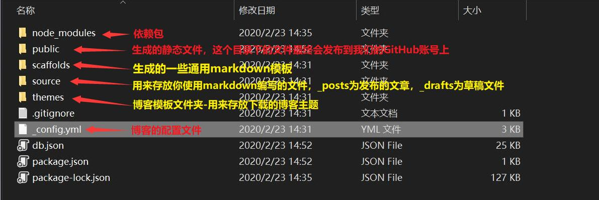

前言
在开始讲解博客搭建的过程前，我想还是先来讲讲我为什么要搭建我的个人博客吧。其实在搭建我的个人博客之前呢，我就一直希望能够拥有一个属于自己的个人博客。
为什么呢？一方面是因为我觉得学计算机的能够拥有一个属于自己的个人博客是一件非常酷的事情，我们可以用blog来记录我们的学习心得，学习路途中所遇到的问题以及解决方法，以至于在我们下一次又遇到同样问题的时候可以回看下我们之前是怎样处理这些问题的，同时呢，我觉得还可以帮助哪些和我遇到相同问题的同学们，希望我写的文章可以去帮助Ta们。这一点呢我就深有体会，在学计算机的这几年里呢，说实话我也经常会遇到一些让我束手无策的问题。当遇到自己无法解决问题的时候呢，就会去问度娘或者Google一下，当我们使用搜索引擎后，我想搜索引擎就会把之前有人踩过的坑和解决该问题的方法显现在我们面前，这个时候我们就可以去解决我们遇到的问题了。在读大学期间，我也见过国内几大博客平台上好多大佬们坚持写作，把自己遇到的坑，心得体会都分享给我们，让我们后人参考，学习。
另一方面呢，我想用我的blog来记录下我生活上的一些琐事。我觉得除我们工作、学习外，我们的个人生活它也值得我们去记录，因为未来可期，明日可待吗！能够有一个自己的个人博客，坚持写点东西，我觉得会对我个人的表达能力、思维判断等等会带来很大的好处，以及当遇到问题时不是想着退缩而是想着迎面而上。同时，我也希望我博客里面写的文章多多少少能够帮助一些有同样问题的同学们。
那接下来我们再来说说为什么不在现有的博客平台上写作，如何选择一个适合自己的博客方案以及搭建个人博客需要注意的事项。
- 为什么不在现有的博客平台上写作？
确实，现在市面上可以写作的平台也有好几家，例如：csdn、博客园、简书、知乎等。想要在这些平台发表自己的文章只需要在相应平台注册自己的账号就可以开始你的写作之旅。但是有利也有弊，缺点就是各种广告以及平台的各种限制，会让人感觉不自由。我这个人比较爱折腾，自己搭建博客的话可玩性也就相对比较大，这也是要搭建个人博客的主要原因。 - 如何选择一个适合自己的博客方案。
搭建个人博客需要考虑的事情也挺多的，比如：自己博客的目的性、使用哪家的博客框架、后期主题模板的选择、域名的购买、服务器的购买、博客的安全性等等。单是域名的购买和服务器的购买，以及后期还要定期去维护它，我想对于我们大多数人来讲都会没这个时间和精力。好在我们还有第三种选择，就是将我们的blog托管到GitHub pages平台上。这样前面的问题一些我们就不用考虑了，只需要安心的写作就可以了。 - 搭建个人博客需要注意的事项。
这个问题其实第二个问题也有涉及到，我就在说说blog框架主流框架都有哪些吧，找一个适合自己的就行，主流的blog框架有：- WordPress 是使用PHP语言开发的博客平台，用户可以在支持PHP和MySQL数据库的服务器上架设属于自己的网站。
- halo 基于springboot vue
- hexo 基于node.js
- solo 基于java,有后台管理
- vuepress 基于vue.js
- Z-Blog 基于Asp和PHP，既是博客程序,也是CMS建站系统
- hugo 基于go语言，Hugo是由Go语言实现的静态网站生成器
- emlog 基于PHP语言和MySQL
- typecho 基于PHP5开发，轻量级开源博客程序
- jekyll 一个简单的免费的Blog生成工具，类似WordPress，它可以将纯文本转换为静态博客网站
我用的是hexo，Hexo是基于Node.js，是一个快速、简洁且高效的博客框架。Hexo使用Markdown（或其他渲染引擎）解析文章，在几秒内，即可利用靓丽的主题生成静态网页。Hexo支持的插件多达320种，主题样式多达290多种也有很多好看的，目前hexo在GitHub上star数量高达29.6k，fork数量高达3.8k，足以说明hexo挺受欢迎的。使用Hexo博客框架，可以快速搭建属于自己的个人静态博客，在把blog托管到GitHub Pages上去，就可以省去服务器维护的时间和精力。
博客搭建前的准备工作
- 在开始搭建自己的个人博客之前你必须要有一个GitHub账号，如果没有的话点击前面的GitHub去注册一个吧。
- 下载node.js安装包，因为hexo是基于node.js，所以我们需要下载并安装node.js，这里推荐大家下载长期支持版(LTS)。
- 安装Git工具，根据自己的电脑环境下载相应的版本，我用的Windows10，所以只需要点击Windows图标下载即可。
使用Hexo和Github博客搭建的步骤
- 安装Git版本控制工具
- 打开Git bash配置全局用户名及邮箱
- 安装node.js
- 打开Git bash使用npm安装cnpm
- 打开Git bash使用cnpm安装hexo
- 使用hexo初始化我们的blog
- 进行本地启动
- 在GitHub上创建存放我们blog的存储库
- 修改相关配置
- 将本地blog部署到我们的GitHub存储库
- 配置SSH key
安装Git版本控制工具
- 找到下载好的Git工具安装包，然后鼠标右击以管理员身份运行，进行安装操作。
- 由于我之前已经安装过了，所以我就不在安装了，只需要打开安装程序，一直点击”Next”即可。
- 安装完成后，我们就可以用鼠标右击桌面一下，点击
Git Bash Here，打开git bash命令窗口查看git是否安装成功以及版本信息。
打开Git bash配置全局用户名及邮箱
- 切到系统桌面，然后我们用鼠标右击桌面一下，点击
Git Bash Here，打开git bash命令窗口即可。 - 分别输入下面的两个命令，进行全局用户名及邮箱的配置。
1
2git config --global user.name "name" // 引号里面的name，需要改写成你的GitHub用户名
git config --global user.email "email" // 引号里面的email，需要改写成你注册GitHub时填写的电子邮箱 - 配置全局用户名及邮箱需要和GitHub上的信息一致，例如：
安装node.js
- 和安装Git版本控制工具一样，鼠标右键安装下载好的node.js安装包即可，安装过程中同样也是一直点击”Next”即可。
- 安装完成后，同样的方式打开Git Bash，输入
node -v查看版本信息来确认node.js是否安装成功。node.js成功后会有两个组件，一个是node.js本身，另一个是npm包管理器，这两个组件是搭建hexo博客时必须要用到的。同时输入npm -v查看npm包管理器的版本信息，如下图所示：
打开Git bash使用npm安装cnpm
- 说明：由于国内的镜像源速度比较慢，使用
npm安装必要插件需要从国外服务器进行下载，受网络影响，可能会出现异常，因此我们这里需要借助npm来安装cnpm。cnpm就是所说的淘宝镜像，是由我们乐于分享的淘宝团队开发出来的开源产品，这里我们使用cnpm就是为了加速下载相关源文件。如果有想了解cnpm的同学，我把官网链接给放上了。 - 安装完node.js后我们就可以正式的安装hexo博客框架，安装hexo时我们会用到npm这个包管理器。上面也给大家说了，在我们大陆我们需要使用淘宝的镜像源
cnpm，所以在这里我们需要借助npm来安装cnpm。同样的方式打开Git Bash输入下面这段代码等待安装完成：1
npm install -g cnpm --registry=https://registry.npm.taobao.org cnpm安装完成后，我们可以输入cnpm -v来查看cnpm的版本信息，之后我们就可以使用cnpm来安装heox博客框架，由于我之前已经安装过cnpm，在这里就不在安装了。
使用cnpm安装Hexo
cnpm安装完成后，我们就可以继续在Git Bash里输入下面的代码来正式的安装Hexo博客框架：1
cnpm install -g hexo-cli // -g表示全局安装- 使用
cnpm安装hexo博客框架很快，网速ok的话也就几秒钟的时间。安装完成后我们可以输入hexo -v来查看hexo的一些版本信息。
使用hexo初始化我们的blog
- 在使用
hexo初始化博客之前我们需要在我们的磁盘上新建一个文件夹，用来存放我们初始化博客时所生成的文件。 - 文件夹创建完成后，我们需要进入到该文件夹，在该文件内打开
Git Bash命令行工具。 - 在打开的
Git Bash命令行里我们就可以使用Hexo来初始化(生成)我们的博客。需要输入以下命令(我的电脑环境是Windows)：1
hexo init - 出现如下图的提示，就说明我们的博客已经初始化完成了。
- 我们先来看下文件夹内都生成了哪些文件，文件夹内的
_config.yml文件是我们博客的配置文件，也是我们要进行重点修改的文件，在该文件内我们要修改blog的名称、语言、时区、等等。

本地启动我们的博客
- 初始化完成后，我们就可以进行本地启动，输入下面的命令来启动我们的博客：
1
hexo server - 等出现如下图所示时，我们就可以打开浏览器输入
http://localhost:4000来进行查看。 - 输入
http://localhost:4000就会出现如下图所示的页面。
- 在我们进行初始化博客的时候
hexo就已经帮我们初始化了一篇名为Hello World的文章，文章里告诉我们一些常用的命令：hexo指令，前面那句话是hexo相关指令使用方法的官方文档链接，感兴趣的同学可以多了解了解，这些命令我们会经常使用。1
2
3
4
5hexo new "My New Post" // 在博客路径下，使用该命令会生成一篇名为 My New Post 的文章
hexo clear // 清除缓存文件
hexo generate // 重新生成静态文件
hexo server // 启动服务器-进行本地浏览测试
hexo deploy // 部署网站 - 我们来使用
hexo new "···"命令来新建一篇博客文章，同时给文章添加一些内容并生成进行本地浏览。
- 这里我是用
vim(是一个类似于Vi的著名的功能强大、高度可定制的文本编辑器)来更改所创建文件的内容，大家也可以nodepad++或者是支持markdown语法的文本编辑器对我们刚才所创建的文件进行添加内容操作，例如： - 更改保存完成后，我们就可以依次输入下面的三个命令，重新进行本地生成、启动并浏览(建议大家每次都依次输入这三个命令)：
1
2
3hexo clear // 清除缓存文件
hexo generate // 重新生成静态文件
hexo server // 启动服务器-进行本地浏览测试
断开hexo server只需要在Git Bash命令行窗口内按下Ctrl+C就可以。
在GitHub上创建存放我们blog的存储库
我们前面生成的博客地址是用于本地测试使用的，就是这个http://localhost:4000地址，别的同学无法通过这个地址访问我们的博客，只能我们自己在我们自己的电脑上浏览。我想我们都希望我们的个人博客能够被所有的联网设备(手机、平板、电脑)所访问，因此我们就需要借助Github，将我们的博客上传到我们的GitHub仓库，之后我们就可以通过访问GitHub那个地址来访问我们的blog。所以我们就需要先在GitHub上创建一个仓库。
- 访问Github网站，登录我们的个人账号后，点击我们头像左侧的加号按钮，然后单击
New repository新建一个存储库。 - 在创建我们个人博客存储库时，仓库的名称必须符合特定的要求才行，仓库名称必须是
我们的GitHub账户名.github.io，例如：ileemi.github.io，ileemi就是我的GitHub用户名，等我们的博客文件上传该存储库后，我们就可以直接在浏览器里输入这个地址来访问我们的博客。 - 如下图所示，就说明我们的存储库创建成功了，这个
https链接我们待会需要使用。
修改相关配置
在将我们的个人博客部署到GitHub仓库之前，我们需要打开博客文件夹下的_config.yml文件，进行一个特别重要的配置。
- 在blog文件夹内打开
_config.yml文件或者使用git工具自带的vim进行相应的配置。打开该文件，找到#Deployment下面的deploy项，如下图所示： - 然后将
deploy下的内容更改成如下图所示(更改后记得保存)：
将本地blog部署到我们的GitHub存储库
在将我们的本地博客部署到我们的GitHub存储库之前，我们需要在我们本地的博客目录下安装一个部署插件，在我们博客目录下打开Git Bash输入以下命令：
1 | |
出现下图提示，就说明部署插件安装成功。
将我们的本地blog文件部署到我们远端的GitHub存储库需要依次输入下面的命令：
1 | |
在使用hexo deploy进行部署的时候，如果进行的比较大的修改，运行该命令期间会要求我们输入GitHub的账号及密码，这个时候我们只需要依次输入账号密码即可，如下面的两张图所示：

接下来我就在我的blog目录下运行这三个命令，部署完成后会出现如下图所示的提示：
部署完成后我们就可以去我们的GitHub存储库查看上传信息：
然后，我们就可以直接通过我们创建GitHub存储库时所起的存储库名来直接访问我们的博客，这样一来所有的联网设备(手机、平板、电脑)都可以通过这个地址来访问我们的博客。例如：直接在浏览器中输入ileemi.github.io，就可以访问到我们的博客，如下图所示：
配置SSH key
Secure Shell（安全外壳协议，简称SSH）是一种加密的网络传输协议，可在不安全的网络中为网络服务提供安全的传输环境。SSH 通过在网络中创建安全隧道来实现 SSH 客户端与服务器之间的连接。SSH 以非对称加密实现身份验证。身份验证有多种途径，例如其中一种方法是使用自动生成的公钥-私钥对来简单地加密网络连接，随后使用密码认证进行登录；另一种方法是人工生成一对公钥和私钥，通过生成的密钥进行认证，这样就可以在不输入密码的情况下登录。任何人都可以自行生成密钥。公钥需要放在待访问的计算机之中，而对应的私钥需要由用户自行保管。认证过程基于生成出来的私钥，但整个认证过程中私钥本身不会传输到网络中。来源于全球百科
简单来说，SSH 是一种网络协议，利用 SSH 协议可以有效防止远程登录过程中的信息泄露问题，常用于计算机之间的加密登录。所在在我们配置完 SSH key 后我们再使用heox deploy命令进行部署时就可以免输用户名和密码。
配置 SSH key 的具体步骤：
首先我们需要打开
Git Bash命令行工具(鼠标任意位置右键点击即可)，输入ls -al ~/.ssh命令来检查之前是否有配置过 SSH key。运行命令后如果显示如下图红框里的提示，说明当前我们还没有配置过 SSH key，如果之前有配置过，可以直接删除.ssh文件夹里面所有文件，重新生成下。使用
ssh-keygen生成密钥，在打开的Git Bash命令行内输入下面的命令生成：1
2
3
4
5ssh-keygen -t rsa -C "your_email@example.com" // 邮箱必须是我们注册Github时的邮箱
# 例如
$ ssh-keygen -t rsa -C "ileemi@163.com" // 我的邮箱
Generating public/private rsa key pair.
Enter file in which to save the key (/c/Users/lh/.ssh/id_rsa): // 这里要我们输入保存密钥的文件夹名称，不想输入直接enter默认就行接下来会问我们是否输入
passphrase密码短语，如果想设置，那这里设置的密码要牢记，这里我就不设置了，直接enter。1
2
3Created directory '/c/Users/lh/.ssh'.
Enter passphrase (empty for no passphrase): // 不想设置密码短语的话直接enter
Enter same passphrase again: // 同上可直接enter密钥生成后，就会出现下面的提示：
这里我们需要打开C盘的用户目录下找到
.ssh\id_rsa.pub文件，用记事本或者nodepad++打开并复制里面的内容，接着打开我们的Github主页，点击个人设置 -> SSH and GPG keys -> New SSH key，将复制的公钥粘贴到Key里面，Title这里随便填写，完成后点击Add SSH key按钮，之后会让我们输入我们的GitHub密码进行验证。输入后如下图所示即可：
接着需要测试是否成功，在
Git Bash命令行里输入下面的代码：1
ssh -T git@github.com // 这里不需要改动，输入后直接enter就行如果出现Are you sure you want to continue connecting (yes/no)?提示，直接输入yes就行，然后就会看到：
1
Hi ileemi! You've successfully authenticated, but GitHub does not provide shell access. //出现这个提示就说明SSH key配置成功乐SSH key配置完成后，还有一个重要的步骤就是需要我们去博客的根目录下打开_config.yml文件，对deploy部分进行如下配置：1
2
3
4
5
6
7
8// 找到这个地方
deploy:
type: git
repository: https://github.com/ileemi/ileemi.github.io.git
branch: master
// 将repository项更改为
repository: git@github.com:ileemi/ileemi.github.io.git完后上面额步骤后，就可以依次使用下面的命令对我们的博客进行部署：
1
2
3
4
5
6hexo clear // 清除缓存文件
heox generate // 重新生成静态文件
heox deploy // 部署网站
// 每次进行本地测试(hexo server)或者部署(hexo deploy)前，
// 建议都先使用hexo clear、hexo generate这两个命令
到这里我们的个人博客部署就已经完成了，后期我们还需要花时间对我们的博客的进行美化，更换主题，添加小功能等等。先把Hexo的官方文档给放在这里，感兴趣的同学可以先了解下。